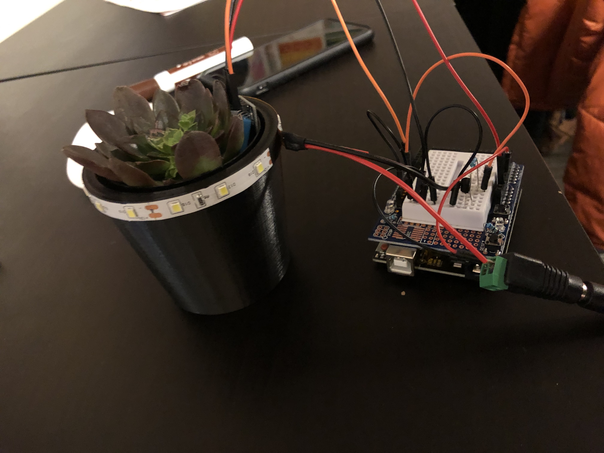
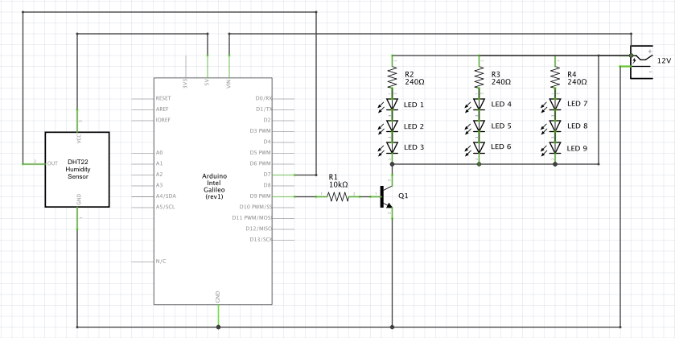

Yuki Asakura's Final Project Sketch

This is my final project sketch: Smart Pot. It is a plant pot with an LED strip that lets users know when to water their plants. I originally had plans to add a bluetooth speaker but due to time constraints, I decided not to pursue that.
Bill of Materials
Main Components
- Arduino
- DHT11 Humidity Sensor
- 9V Alkaline Battery
- Flexibe LED Strip Lights
- 12V Power
Secondary Components
- Resistors
- Transistor
- Breadboard
- Wires

Circuit Operation. The plant pot glows when the plant needs more water. When the plant gets more water, the plant stops glowing. It is all powered by a 12V outlet without the connection of a laptop. The LED strip wraps around the rim of the plant pot.
3D Model of Plant Pot. The plant pot was designed in Rhino and printed with a 3D printer. The rim's height matches the width of the led strip.

Circuit board. When the humidity sensor recognizes a low humidity, the led strip lights glows up.
#include <dht.h> // include dht library
dht DHT; // define dht as DHT
#define DHT11_PIN 7 // set humidity sensor as pin 7
int temp = 0; // initializing temperature int
int hum = 0; // initializing humiditity int
int ledPin = 9; // set led pin as pin 9
void setup(){ // setup the arduino
Serial.begin(9600); // set serial monitor speed as 9600
}
void loop() // this function loops after setup
{
int chk = DHT.read11(DHT11_PIN); // this function reads the humidity sensor
temp = DHT.temperature; // setting temp as the temperature
hum = DHT.humidity; // setting hum as the humidity
Serial.print("Temperature = "); // print temperature in serial monitor
Serial.println(temp);
Serial.print("Humidity = "); // print humidity in serial monitor
Serial.println(hum);
if (hum < 40) { // if the humidity is lower than 40, initiate loop
for (int fadeValue = 0 ; fadeValue <= 100; fadeValue += 5) { // fade in from min to max in increments of 5 points
analogWrite(ledPin, fadeValue); // sets the value (range from 0 to 255)
delay(30); // wait for 30 milliseconds to see the dimming effect
}
for (int fadeValue = 100 ; fadeValue >= 0; fadeValue -= 5) { // fade out from max to min in increments of 5 points
analogWrite(ledPin, fadeValue); // sets the value (range from 0 to 255):
delay(30); // wait for 30 milliseconds to see the dimming effect
}
}
delay(2000); // setting delay as 2 seconds to remove bad readings
}
Arduino Code Snippet. Note that the glowing of the LED is triggered when DHT 11 Humidity Sensor reads a value of less than 40. This is because typically a plant should be between 40%~60% humidity.

Schematic. Note that the entire circuit is powered just by the 12V outlet.